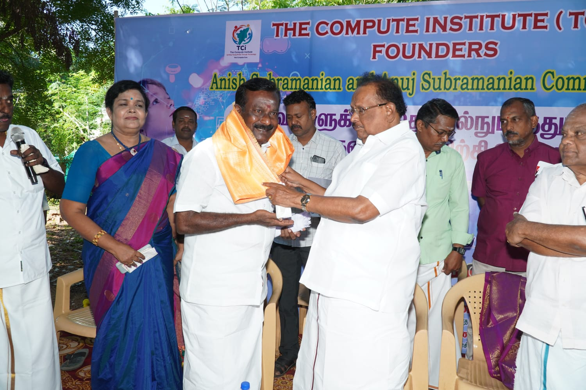
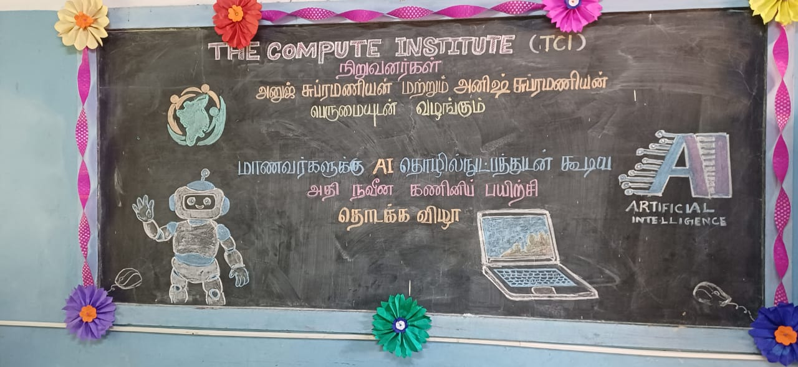
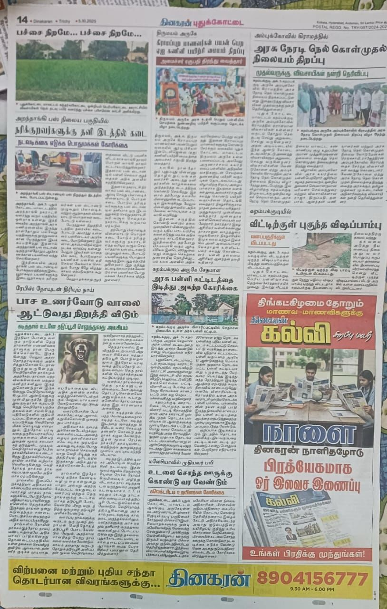

Panayapatti Inauguration Event
The Compute Initiative (TCi) is proud to announce the inauguration of a new AI-enabled computer lab, a community initiative led by its founders, Anish Subramanian and Anuj Subramanian.
The inauguration event took place on Friday, October 3, 2025, at 9:00 AM at the Govt. Higher Secondary School, in Panayapatti (Pudukottai District).
We are honored to have had the Honorable Tamil Nadu Minister for Natural Resources, Mr. S. Ragupathi, officiate the ceremony. He was joined by local educators, dignitaries, and community leaders.
This initiative aims to empower rural students by introducing Computer Science as a standard subject for grades 6 through 10. TCi will donate computers and provide ongoing support with a dedicated curriculum and teaching staff, enabling students to gain vital skills in modern technology, including resposible AI learning through a strong collaboration with local volunteers and educators.
Photo Highlights
Moments from Panayapatti inauguration.






Student Recognition Ceremony
The Co-Founders and Administrative Team for The Compute Initiative , Anish Subramanian and Anuj Subramanian and the SRM Arunachalam Staff, were honored to attend the Student Recognition Ceremony at SRM Arunachalam Higher Secondary School in Panayapatti on December 24, 2025. This special event celebrated the achievements of students who have excelled in their computer science studies since the launch of our first computer lab in October 2025. It was inspiring to see the dedication and hard work of these students being recognized by their school and community. We are proud to support their educational journey and look forward to seeing all they will accomplish in the future.
Ceremony Highlights
Take a look at some of the memorable moments from the Student Recognition Ceremony at SRM Arunachalam Higher Secondary School in Panayapatti.


Second School Opens — Kuruvikondanpatti
In 2026, The Compute Initiative installed its second computer lab at a government-aided school in Kuruvikondanpatti, extending the same daily computer science curriculum that launched at Panayapatti to a new community of students. With this expansion, TCI now runs a daily curriculum across 2 schools, has delivered 700+ teaching hours to 200 students, and is supported by our newest teacher, Saranya.
Kuruvikondanpatti Highlights
Setting up the new computer lab and welcoming students to their first classes.


2026 Book Distribution
Alongside our computer labs, TCI distributed 300 books to students at our partner schools in 2026, supporting reading and learning beyond the computer lab.
Book Distribution Highlights


TCI is Now an Official Code Club
The Compute Initiative is officially registered as a Code Club, part of the Raspberry Pi Foundation's global network of free coding clubs for young people. Our students now have the opportunity to learn to code games, animations, and websites, develop critical-thinking and problem-solving skills, and share their knowledge with others — with Anish and Anuj Subramanian recognized as Code Club Leader and Mentor.